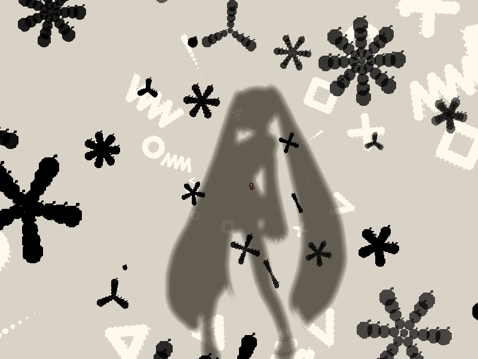
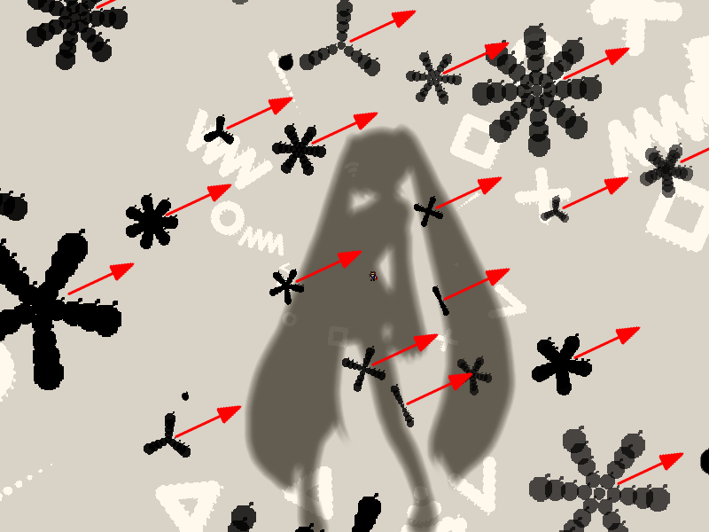
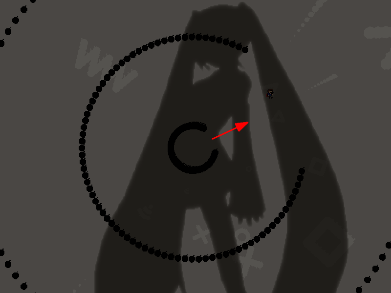
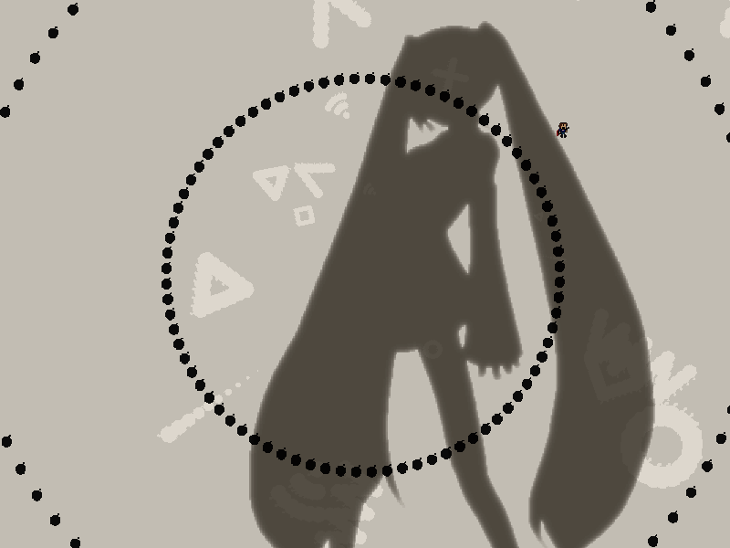
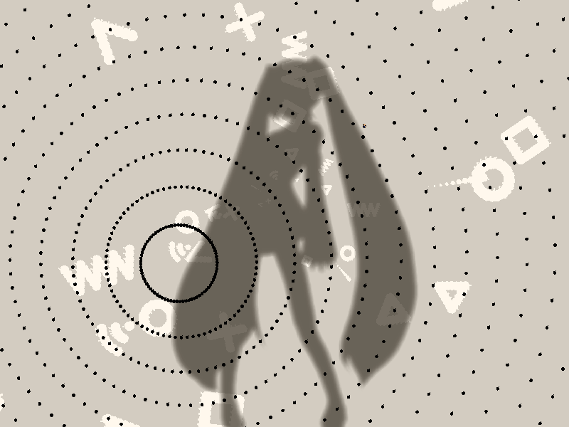

| creator | segment | label | jump |
|---|---|---|---|
| NN | 1:53.50~1:58.20 | Q+P*A | infinite |
互いに素を題材とした角度のみが一定の条件のもとランダムな弾幕です。
1:53.50~1:55.90において、画面中央から一定以上離れた位置を中心として生成されるアスタリスク状弾幕に関して、これらは2~8の方向数をとり、いずれの方向数をとる場合においても生成時点である特定の角度（正解の角度）に対して最も開く形状をとります（fig.8-8-1.a）。
また、1:55.90において画面中央を中心として生成される同心円状弾幕についても、同様に正解の角度に対して最も開く形状をとります（fig.8-8-1.b）。
したがって、アスタリスク状弾幕の形状から正解の角度を見極める必要があります。
2~8の方向数をとるアスタリスク状弾幕に関して、その方向数が互いに素であるもの同士の角度を確認することによって正解の角度を確定させることができるという性質を利用することを目的としています。
なお、それぞれのアスタリスク状弾幕については生成から40step経過後に回転を始めるまで当たり判定が存在しません。


同心円状弾幕を構成する円形弾幕に関して、1:56.40において最も内側に存在するものの半径が、1:55.90におけるプレイヤーの位置を基準として決定されます（fig.8-8.2）。
具体的には、その半径が1:55.90におけるプレイヤーの位置と1:56.40における同心円状弾幕の中心との距離に一致するように決定されます。
なお、その距離が1:55.90における画面の中心と1:56.40における同心円状弾幕の中心との距離よりも小さい場合は、それ以上小さい値（<150px）にはなりません。
したがって、同心円状弾幕については画面中央から正解の角度に対して適切に距離を取ることで回避することができます。
また、1:55.90~1:58.20においては画面外被弾判定が存在しません

1:56.80以降において生成される同心円状弾幕（fig.8-8.3）については、4-9と同様に発射源から離れ続ける（または近づき続ける）ことで回避することができます。
なお、これらの当たり判定は1:57.80の時点でなくなります。
